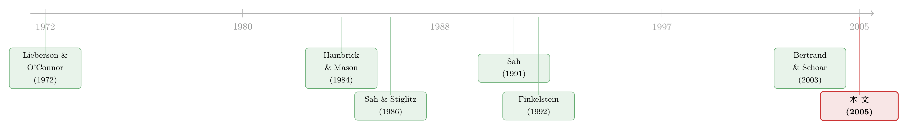

老板说了算的公司，业绩为什么忽好忽坏？
本文读的是 Adams, Almeida & Ferreira (2005, Review of Financial Studies)：当一家公司的重大决策几乎由 CEO 一个人拍板时，它的业绩不一定更好、也不一定更差，但一定更极端。作者把「CEO 有没有用」这个老问题，从「均值」悄悄换成了「方差」——他们发现，由强势 CEO 掌舵的公司，股票收益、ROA 和 Tobin's Q 的波动都明显更大。
1 一个被问了三十年、却始终没问对的问题
CEO 到底重不重要？
这是组织理论和公司金融吵了几十年的一桩公案。一派人——最早可以追溯到 Lieberson 和 O'Connor (1972)——拿大样本去回归公司利润，发现把「换了哪个 CEO」这件事加进模型，对盈利能力几乎没有额外的解释力；于是他们说，CEO 不过是组织和环境这台大机器上一个可有可无的零件。另一派人，像 Hambrick 和 Mason (1984)，则坚持高管是组织演化的根本驱动力，公司的样子其实是它那帮顶层管理者的「倒影」（这就是著名的 upper echelons 理论）。
吵到最后，证据各执一词，谁也说服不了谁。
问题出在哪？本文三位作者（Adams、Almeida、Ferreira）给出了一个相当漂亮的诊断：大家一直盯着「均值」在吵。所有人都在问「强势的 CEO 会让公司业绩更好、还是更差」——也就是去估计 CEO 对业绩期望值的影响。可是，如果 CEO 的真正作用不是把业绩系统性地往上抬或往下压，而是让它更不可预测呢？
于是一个自然的问题浮现出来：与其问 CEO 影响业绩的第一矩，不如去问他影响第二矩——业绩的波动性 (variability)。这正是这篇论文的全部精髓所在。它的核心假设只有一句话：
CEO 的决策权越集中，公司业绩的波动就越大。
2 这个直觉，其实来自「经济系统的建筑学」
为什么权力集中会带来更大的波动？这一步的逻辑，作者借自经济学里一个看似与公司治理八竿子打不着的工作——Sah 和 Stiglitz (1986, 1991)。
他们当年想回答的是一个宏大的问题：一个经济系统该如何「组装」决策？Sah 和 Stiglitz 把组织抽象成两种极端：层级制 (hierarchy) 和 多头制 (polyarchy)，而其中真正关键的机制，是当决策者会犯判断错误时，群体决策会产生一种「意见的分散化 (diversification of opinions)」效应。
把这个机制拆开来看：
首先，假设每个管理者都可能看走眼——有时把坏项目当成好项目，有时把好项目误杀。接着，如果一个项目必须要好几个人都点头才能上马，那么坏项目被拦下来的概率就高了（因为只要有一个人看出它是坏的，它就过不了）；但出于同样的道理，好项目被错杀的概率也高了。于是，群体决策的最终结果，是各种意见折中、相互抵消之后的一个比较温和的产物。Sah 和 Stiglitz 在 1991 年那篇里说得最直白：当更多高管对决策有影响力时，业绩应当更不波动。
而这里真正关键的一步是反过来读这句话：在他们的模型里，决策群体规模的扩大，效果上等价于单个决策者权力的下降。所以，如果我们沿着这条逻辑往回推，一个权力高度集中、可以一个人拍板的 CEO，就相当于把决策群体缩小到了「一」——意见无从分散，判断误差也就无从对冲。好决策和坏决策的极端结果，都会以更高的频率出现。
Sah (1991) 自己其实早就把这个直觉用到了政治上：他猜想，由独裁者统治的国家，经济表现会比民主国家更动荡。本文的假设，几乎就是把这个「独裁 vs 民主」的猜想，平移到了「强势 CEO vs 集体决策」的公司层面。
这条直觉还能从另一个完全不同的方向得到印证。管理学里有个概念叫管理者裁量权 (managerial discretion)（Hambrick & Finkelstein, 1987）：高管的个人特质能不能反映到组织结果上，取决于他有多大的施展空间——裁量权大，高管的性格、偏好、经验就直接写进了公司的结果；裁量权小，则被组织和环境的约束稀释掉了。再叠加上社会心理学里的「弱情境 (weak situation)」（Mischel, 1977）——顶层战略决策本就是一种选择高度发散、难以预测的情境——结论就呼之欲出了：CEO 越强势，他在这种弱情境里的个人判断就越能不打折扣地变成公司的最终决策，而个人判断本身是高度可变的，公司业绩自然就更跳。
注意，这个故事不依赖任何代理理论。事实上 Demsetz 和 Lehn (1985) 的代理逻辑会给出一个相反的预测：不确定性越高，道德风险的空间越大，股东就越该收紧对经理人的约束、削减其权力——也就是说，波动应当与 CEO 权力负相关。这一点很重要：如果真有这种反向力量在起作用，那它只会让作者更难找到正相关。所以一旦正向关系被识别出来，证据反而更有说服力。
3 怎么给「权力」称重？
理论很美，但「权力」是个滑溜溜的东西。Pfeffer (1997) 说，几乎所有关于权力的定义都包含「克服阻力 (overcoming resistance)」这层意思；而要把权力和运气区分开，March (1966) 提醒我们这种克服阻力的能力还得是一贯的。可即便如此，权力依然没有一个天然、无歧义的度量。
作者的取舍很务实：他们沿着 Finkelstein (1992) 区分的四种权力来源（结构性、所有权、专家、声望），主攻其中的结构性权力 (structural power)——CEO 凭借其正式职位和头衔，对董事会和其他高管能有多大的支配力。说白了，他们想抓住的核心是：在 CEO 之外，还有几个人能真正参与到顶层决策里来？ 参与的人越多，CEO 就越不可能一个人说了算。
由此构造出三把尺子：
- CEO = founder：CEO 是否同时是公司创始人之一。创始人天然更有影响力（Donaldson & Lorch, 1983）。样本里这一项的均值只有
0.09——即只有 9% 的公司-年里，CEO 是创始人。 - CEO only insider：CEO 是否是董事会里唯一的内部人。如果除 CEO 外还有内部经理坐在董事会上，那人多半会和 CEO 一起参与顶层决策，CEO 的权力就被分走一块。样本里 71% 的公司-年都有「另一个内部人」在董事会，所以「CEO 唯一内部人」的均值是
0.29。 - CEO's concentration of titles：CEO 是否把头衔攥在自己手里。具体定义为：CEO 既是董事长 (chairman) 又是总裁 (president)；或者他是董事长、且公司根本没有 president 也没有 COO。这把尺子和 Morck, Shleifer & Vishny (1989) 用的 BOSS 变量很像。样本里有 86% 的公司-年 CEO 兼任董事长，但只有 27% 兼任 president，综合下来「头衔集中度」均值为
0.41。
一个细节值得停下来想一想：为什么「没有 president / COO」也算头衔集中？作者把它和 CEO 接班机制联系了起来。如果公司搞的是「传棒 (passing the baton)」式的接班（Vancil, 1987），现任 CEO 会提前把 president 的头衔交给指定接班人，好让他参与到 CEO 级别的决策里——这种公司就有 president，CEO 反而不那么独。反过来，如果公司搞的是「赛马 (horse race)」式的锦标赛接班，候选人头衔相当、谁也不会被单独提拔成 president，输的人最后还要走人，于是公司往往没有 president 或 COO，头衔最集中地压在身兼董事长的 CEO 身上。同一个「没有 president」的表象，背后是一套关于权力如何在接班过程中被分配的精巧推理。
三把尺子彼此的相关性都很低（最高的是「头衔集中」与「唯一内部人」之间的 0.19，而「创始人」与另外两者甚至是轻微负相关，分别是 -0.10 和 -0.01），这说明它们捕捉的确实是权力的不同侧面，而不是同一个东西换了三种说法。
4 识别策略：他们检验的是「方差」，不是「均值」
这是全文方法论上最聪明的地方，也是最容易被读者忽略的地方。
因为假设说的是「业绩波动随 CEO 权力上升」，所以作者要做的不是普通的均值回归，而是一组异方差检验 (heteroskedasticity tests)。换句话说，他们要看的是：在控制了一堆公司特征之后，残差的方差会不会系统性地随三把权力尺子而变大。这相当于把计量经济学里通常被当作「麻烦」要去消除的异方差，反过来当成了研究对象本身。
这个假设对两个维度的波动都有含义：
- 跨公司 (across-firm)：强势 CEO 掌舵的公司，彼此之间的业绩应当更分散。
- 公司内 (within-firm)：同一家公司，在 CEO 权力更大的年份，业绩的时间序列波动应当更大。
作者用面板数据同时承载这两种效应。但他们也很坦诚地指出，样本是「公司多、年份少」（336 家公司、1992–1999 共 8 年），面板结果很可能主要被跨公司变异驱动。于是他们专门加做了一组公司内的检验：把每家公司 1992–1999 这段时间里业绩指标的标准差，回归到 CEO 权力度量上，以此把 within-firm 的效应单独剥出来。
业绩指标用了三个：月度股票收益（含红利，来自 CRSP，主指标）、ROA（税前非经常性损益前净利润 / 账面资产）、以及 Tobin's Q（公司市值 / 账面资产，市值 = 账面资产 − 账面权益 + 权益市值）。股票收益捕捉市场对决策的实时定价，ROA 捕捉会计意义上的真实经营波动，Q 捕捉市场对长期价值的判断——三个角度互为印证。
还有一步很关键的「加戏」：作者引入了 Hambrick 和 Abrahamson (1995) 的行业裁量权分类，专门挑出那些「经理人天然有较大裁量空间」的行业。逻辑是：如果波动真的来自 CEO 的个人判断，那么在裁量权高的行业里，这种「权力 → 波动」的关系应当更强。这是一记漂亮的横截面安慰剂式检验——它把假设里那个「裁量权」的中介机制，从纯理论变成了可观测的切口。
5 数据与结果：创始人 CEO 的指纹最清晰
数据来自 1998 年《财富》500 强中剔除金融与公用事业后、在 ExecuComp (2000) 上有数据的公司，时间跨度 1992–1999。最终样本是 336 家公司、2633 个公司-年，背后是 30,689 个月度股票收益和 16,022 个高管-年的头衔数据。财务数据补自 Compustat，公司成立年份查自 Moody's 工业手册、委托书和年报。值得一提的是，样本天然偏向「大且活下来」的公司——但作者论证说，这种幸存者偏差如果有影响，也只会压低波动、从而对冲掉他们想找的正向关系，属于「保守的偏差」。
结果方面，作者的结论是清晰的：由强势 CEO 掌舵的公司，股票收益的波动确实更大，用 ROA 和 Tobin's Q 替换也得到类似结论；这种关系既存在于公司之间、也存在于公司内部。其中证据最有说服力的，是把 CEO = founder 当作权力度量的时候；CEO only insider 这个度量也表现出明显的正向关系。而当限定在 Hambrick-Abrahamson 的高裁量权行业里时，三把尺子全都与股票收益波动正相关——这恰好印证了「裁量权」这个中介机制。在处理完一系列内生性顾虑（Section 5）之后，作者认为这种正相关与「权力 → 波动」的因果方向是一致的。
实话实说：受手头正文截断所限，我无法把异方差检验的逐个系数和 t 值原样抄给你（论文正文在进入 Section 4 的回归表之前就被截断了）。所以上面这一段，是对作者在摘要与引言中明确陈述的定性结论的转述，而非对某张回归表的逐格读数。我能向你核实的硬数字，是 Table 1 里那些样本统计量（9%、29%、41%、0.86、0.27……）——这些是真实的；至于「波动具体大了几个百分点」，请以原文 Table 2–6 为准，我不替它编造一个数。
6 文献脉络：从「CEO 有没有用」到「CEO 让结果有多极端」
把这篇论文放回它所在的那条河流里，叙事就清晰了。
上游，是组织理论里那场关于「高管要不要紧」的拉锯：Lieberson & O'Connor (1972) 说不要紧，Hambrick & Mason (1984) 说要紧。与此平行，经济学里 Sah & Stiglitz (1986, 1991) 在研究决策系统的「建筑学」，提出了意见分散化这个看似与公司无关、实则正中靶心的机制；Sah (1991) 又把它推广到了政治系统。中游，Finkelstein (1992) 给「高管团队里的权力」做了系统的维度划分与测量，为本文的三把尺子提供了脚手架。
而本文真正的位置，是把这两条原本平行的支流汇到了一起：它借经济学的「方差」直觉，用金融学的异方差检验和上市公司数据，去回答管理学的那个老问题——并且用一个谁也没正面问过的角度（业绩波动）绕开了「均值之争」的死结。

顺着这条线往后看，公司金融在差不多同一时期开始大规模地「把高管个人特质写进公司结果」：Bertrand & Schoar (2003) 用经理人固定效应识别出「管理风格」，Malmendier & Tate (2005) 把 CEO 的过度自信和投资行为挂上钩。本文与它们是同一波浪潮里的同路人，只不过它额外强调了一句：高管特质能不能translate 成公司结果，取决于组织把多大的决策权交到了他手里。（关于经理人特质如何藏在波动率里，可参见《经理人的「过度自信」，其实藏在波动率里》；关于董事会与 CEO 之间的权力博弈，可参见《炒掉 CEO，董事是英雄还是「帮凶」？》；关于「CEO 究竟变没变」的后续追问，则可参见《CEO 真的变「软」了吗？》。）
7 评论与延伸（Q&A + 研究方向）
(a) 几个可能的疑问
Q：业绩波动更大，到底是好事还是坏事？
本文刻意不回答这个问题，这正是它的高明与克制之处。强势 CEO 既更容易做出「极好」的决策，也更容易做出「极坏」的决策——波动本身是中性的。论文检验的是「权力 → 波动」，而不是「权力 → 价值」。把它读成「强势 CEO 毁掉公司」或「成就公司」，都是误读。
Q：用股票收益的波动当业绩波动，会不会其实只是在测「风险」？
这是最该担心的一点，作者也意识到了。社会心理学里「冒险转移 (risky shift)」「群体极化」「群体迷思」这些现象处理的是 risk，与本文说的「结果可变性 (variability in outcomes)」在概念上并不完全是一回事。更要命的是 Demsetz-Lehn 的反向逻辑：如果高波动是底层不确定性的代理，股东本该削减 CEO 权力，那会压低正相关。作者用 ROA、Q 三个不同维度的指标交叉验证，正是为了说明结果不是单一「市场风险」度量的假象。
Q：三把权力尺子里，为什么偏偏「创始人」最干净？
因为「CEO = founder」最接近一个外生的、难以被当期业绩反向塑造的身份标签——一个人是不是创始人，基本由几十年前公司怎么起家决定，不太可能因为今年股价波动大就改变。相比之下，「头衔集中」「唯一内部人」都更可能是董事会针对公司状况主动调整的结果，内生性顾虑更重。
Q：会不会是「波动大的公司更倾向于把权力集中给一个强人」，因果反过来了？
这正是 Section 5 要处理的核心威胁，也是 Demsetz-Lehn 框架的直接含义。作者的辩护有两层：一是反向因果（高波动 → 集中权力）在代理逻辑下应当是负号，与他们找到的正号相反，因此反向因果只会削弱、而非制造他们的结果；二是「创始人」这个近乎前定的度量，本身就削弱了反向因果的空间。
Q：样本只有大公司，结论还能推广吗？
不能无条件推广。样本是 1998 年《财富》500 强，偏大、偏「活下来」。作者的论证是：即使大公司的 CEO 平均权力偏低、样本整体波动偏小，只要大公司内部 CEO 权力仍有足够的横截面差异，检验就依然有效；而幸存者偏差的方向是保守的。但「中小公司里这条关系更强还是更弱」，本文回答不了。
Q：这和「CEO 兼任董事长不利于治理」的传统观点是一回事吗？
不是。代理文献把「内部人主导董事会」「两职合一」视为治理坏信号（不利于中小股东）。本文明确区分了自己与这套解释：它关心的不是 CEO 会不会侵害股东，而是 CEO 的个人判断会不会更直接地变成公司结果、从而放大波动。同一个变量（如两职合一），在两套框架里讲的是完全不同的故事。
(b) 几个可能的研究问题与提案
1. 把「权力 → 波动」搬到公司债与信用利差上
【经济故事】股票持有人某种程度上「喜欢」波动（期权式收益），但债权人厌恶它。如果强势 CEO 系统性地放大业绩波动，那么债券市场应当对「CEO 权力」定价——表现为更高的信用利差、更短的债务期限、或更严的契约条款。这把一个治理变量直接接到了信用风险上。 【可行性】高。三把权力尺子可由 ExecuComp/BoardEx + 手工核查复刻，信用利差用 TRACE，发行条款用 DealScan/Mergent FISD。识别上的难点与原文一致（权力的内生性），但「创始人」这把相对外生的尺子可作主力，行业裁量权分类可做异质性检验。
2. 外资持有人会「驯服」强势 CEO 的波动吗？
【经济故事】把 Sah-Stiglitz 的「决策群体规模」类比延伸到股东端：积极的机构与外资持有人是否相当于在 CEO 之外引入了更多「有影响力的声音」，从而压缩业绩波动？如果是，那么外资进入应当减弱「权力 → 波动」的斜率。 【可行性】中。需要 13F / FactSet 的外资与机构持股数据，识别可借用指数纳入（如 MSCI 调整）带来的外生持股变动作为工具。难点在于把「持股」翻译成「决策影响力」，这一步需要额外的治理代理变量。
3. 强制性 CEO 更替作为权力的外生冲击
【经济故事】原文最大的软肋是内生性。一个更干净的设计是利用外生的权力变动——比如创始人 CEO 因健康原因突然离任、或因死亡被迫更替——看公司业绩波动是否随之系统性下降。这把横截面相关变成了准事件研究。 【可行性】中。需要手工搜集 CEO 离任原因（区分自愿/非自愿、健康/死亡），样本量会大幅缩水，统计功效是主要风险。但只要能凑出足够的「创始人意外离任」事件，识别上的说服力远胜原文的截面回归。
4. 用文本度量「决策集中度」
【经济故事】三把尺子都是粗粒度的二元变量。能不能用年报、电话会议、委托书的文本，构造一个连续的「决策由 CEO 一人主导」的指标（比如 CEO 在电话会上发言占比、第一人称单数 vs 复数的使用）？这能让「权力」从离散标签变成连续刻度，大大提高检验功效。 【可行性】中。文本数据（Seeking Alpha transcripts、SEC EDGAR）可得，NLP 工具成熟。难点是验证文本指标确实捕捉了「决策权」而非「个人风格」，需要与原文三把尺子做收敛效度检验。
参考文献
Adams, R. B., Almeida, H., & Ferreira, D. (2005). Powerful CEOs and Their Impact on Corporate Performance. Review of Financial Studies 18(4), 1403–1432.
Bertrand, M., & Schoar, A. (2003). Managing with Style: The Effect of Managers on Firm Policies. Quarterly Journal of Economics 118(4), 1169–1208.
Demsetz, H., & Lehn, K. (1985). The Structure of Corporate Ownership: Causes and Consequences. Journal of Political Economy 93(6), 1155–1177.
Finkelstein, S. (1992). Power in Top Management Teams: Dimensions, Measurement, and Validation. Academy of Management Journal 35(3), 505–538.
Hambrick, D. C., & Abrahamson, E. (1995). Assessing the Amount of Managerial Discretion in Different Industries: A Multimethod Approach. Academy of Management Journal 38(5), 1427–1441.
Hambrick, D. C., & Mason, P. (1984). Upper Echelons: The Organization as a Reflection of its Top Managers. Academy of Management Review 9(2), 193–206.
Lieberson, S., & O'Connor, J. F. (1972). Leadership and Organizational Performance: A Study of Large Corporations. American Sociological Review 37(2), 117–130.
Malmendier, U., & Tate, G. (2005). CEO Overconfidence and Corporate Investment. Journal of Finance 60(6), 2661–2700.
Morck, R., Shleifer, A., & Vishny, R. (1989). Alternative Mechanisms for Corporate Control. American Economic Review 79(4), 842–852.
Sah, R. K. (1991). Fallibility in Human Organizations and Political Systems. Journal of Economic Perspectives 5(2), 67–88.
Sah, R. K., & Stiglitz, J. (1986). The Architecture of Economic Systems: Hierarchies and Polyarchies. American Economic Review 76(4), 716–727.
Sah, R. K., & Stiglitz, J. (1991). The Quality of Managers in Centralized versus Decentralized Organizations. Quarterly Journal of Economics 106(1), 289–295.